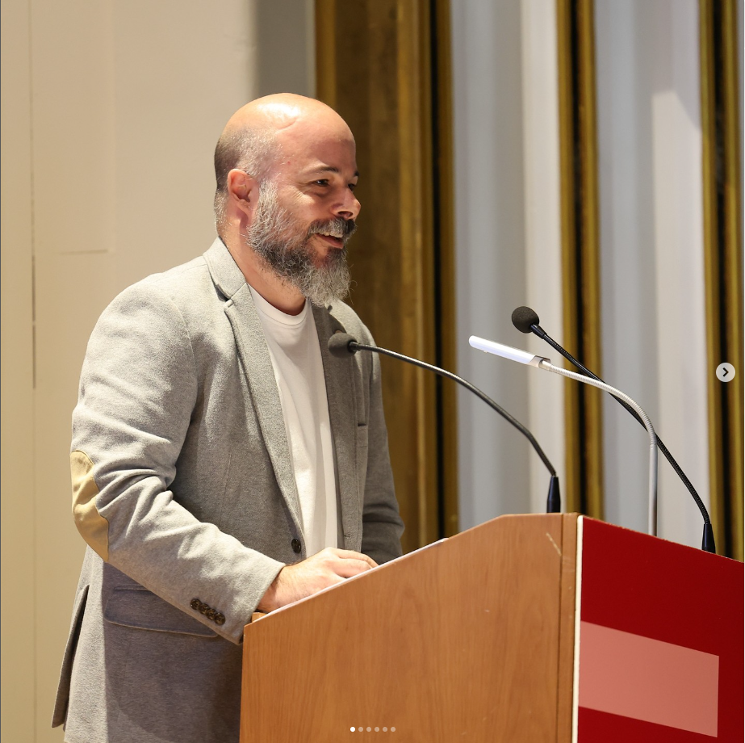
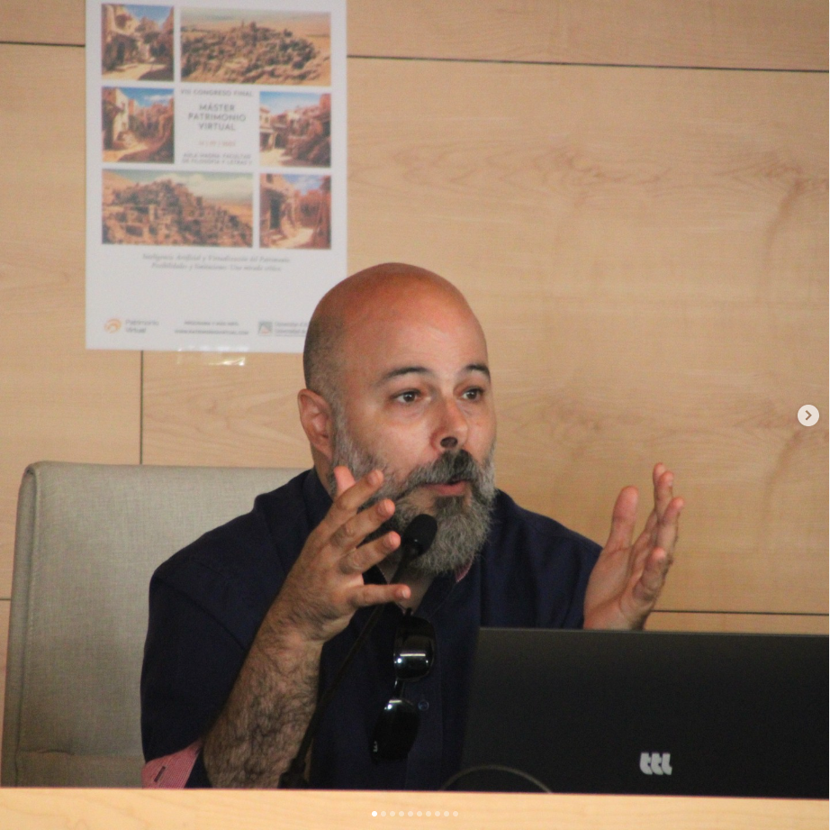
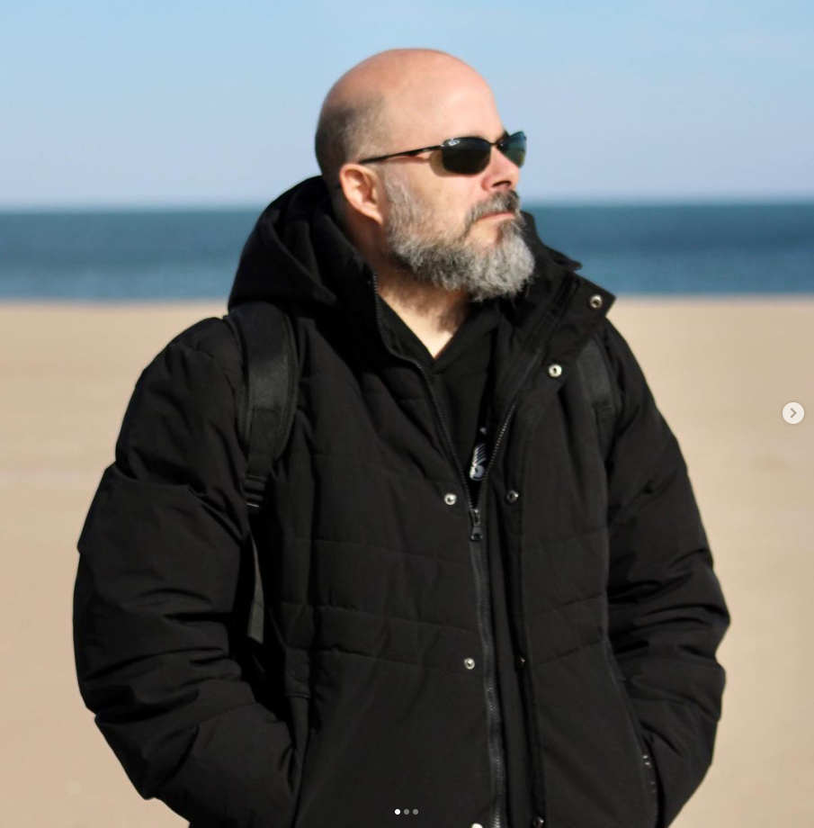
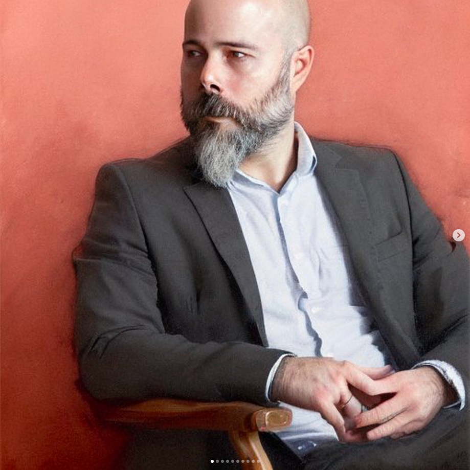

|  |
El mes pasado se celebró, en el Ateneo de Valencia, el acto de fin de curso de los alumnos de segundo curso de la modalidad online y semipresencial de @capitolformacionprofesional en la cual se graduaron mis alumnos de los ciclos de Sistemas Microinformáticos y Redes, y Desarrollo de Aplicaciones Multiplataforma - y ahora, a recargar las pilas este verano |
| Durante este curso he tenido el placer de ser parte del claustro del Master en Patrimonio Virtual de la Universidad de Alicante - @patrimonio_virtual , y he tenido el honor de ser invitado y formar parte del Congreso Final de Máster, realizando una ponencia acerca de los fundamentos de la Inteligencia Artificial aplicada al contexto del máster, y participando en la mesa redonda donde se estuvo abordando la aplicación de la IA a disciplinas tales como la arqueología |
 |
|  |
Tengo prisa por ir, pero no tengo prisa por llegar
|
| Probando los Magic Avatars de Lensa AI |
 |